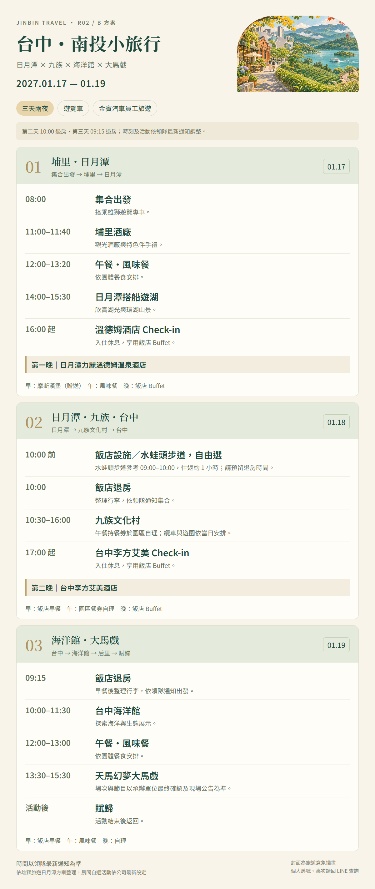

JINBIN TRAVEL / R02
背景音效
山水流水・蟲鳴白噪音
流水與蟲鳴背景音，可調整音量或關閉。
點一下開啟聲音，也可以安靜閱讀。行程總覽
每日行程表
依雄獅旅遊行程表整理
2027.01.17 — 01.19・三天兩夜
第二天 10:00 退房・第三天 09:15 退房；時刻及活動依領隊最新通知調整。

開啟完整行程圖片集合資訊
集合地點
景點介紹
景點攻略
依本次行程推薦
景點介紹與行前小提醒
第二天上午
第二天早上，
10:00 前的兩種選擇。
飯店設施或水蛙頭步道，自由選擇。
第二天 10:00 退房，請預留返回及整理時間。
住宿介紹
住宿資訊
三天兩夜・先南投，再台中
第一晚溫德姆，第二晚李方艾美
NIGHT 01 · WYNDHAM SUN MOON LAKE
日月潭力麗溫德姆溫泉酒店
第一晚入住南投日月潭畔。館內設施、開放時間、使用條件與備品，請參閱飯店最新公告。
查看飯店官網NIGHT 02 · LE MÉRIDIEN TAICHUNG
台中李方艾美酒店
第二晚入住台中市區。自由活動可先確認飯店位置，再規劃附近散步與用餐；返回時間依領隊通知。
查看飯店官網飯店官網僅供查閱介紹；房型、餐食、設施使用與入住安排，以公司及飯店確認資訊為準。
行前準備
行前準備清單
本方案為三天兩夜，第一晚住南投日月潭力麗溫德姆，第二晚住台中李方艾美。集合車輛、餐食與景點依正式行程；自由活動別忘記預留回程時間。
勾選紀錄只保留在這台裝置。
實用資訊